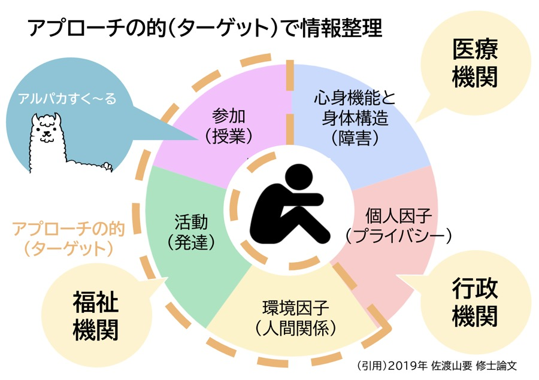
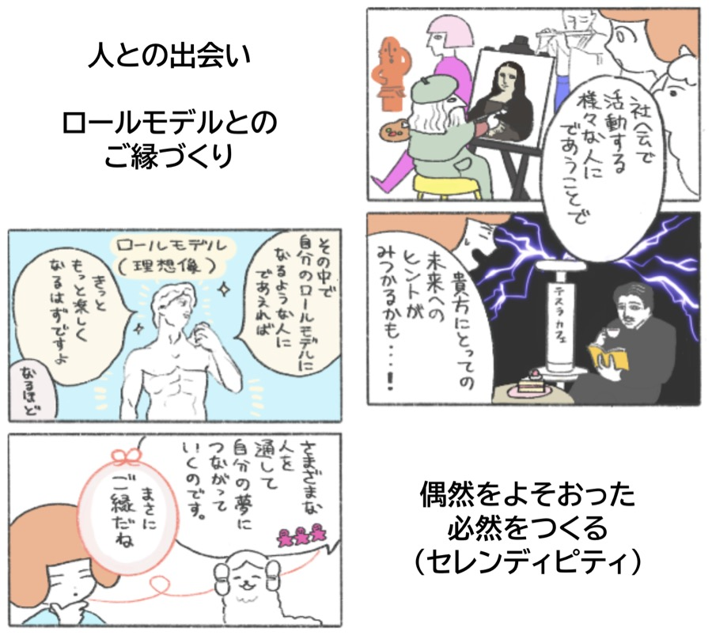
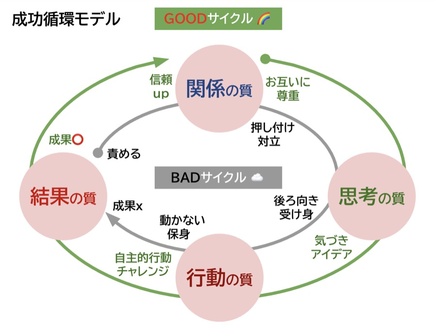
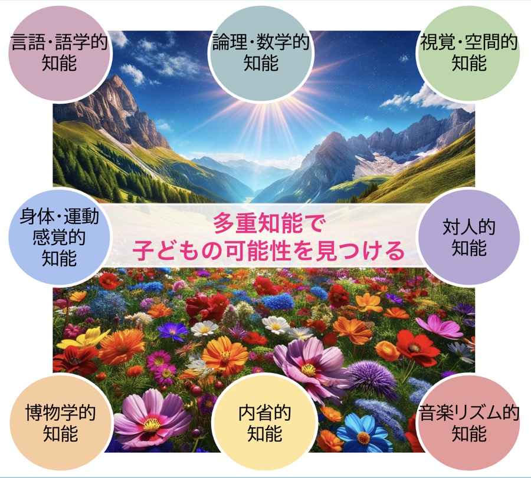

学校や家庭に居場所を見出しにくい子どもたちに対し、地域の大人との出会いや実体験を通じて、「自分は何ができるのか」「どのように社会と関わっていくのか」を体験的に学ぶ機会を提供します。
| 実施体制 | 喜名自治会 × 株式会社琉球のタネ（連携協定） |
|---|---|
| 連携先 | 読谷中学校、村教育委員会、こども未来課、青少年センター、社会福祉協議会、嘉手納警察署、読谷商工会、地域企業 ほか |
| 実施期間 | 第1期：2025年7月〜2026年3月（7〜9月は準備期間） 第2期：2026年4月〜現在 |
| 参加生徒 | 第1期対象 6名（3年生1名・2年生4名・1年生1名） 第2期対象 4名（3年生3名・2年生1名）継続募集中 |
出典：2026年8月20日 第52回九州地区人権・同和教育夏期講座 特別講座Ⅰ 配布資料
この事業の土台にある、4つの考え方です。

「環境」「活動」「参加」に集中します。心身機能・個人因子には深入りせず、医療・行政・福祉の専門機関に委ねます。

正解のない問い（仕事）に「楽しく本気」で向き合うロールモデルとの出会い。親と先生以外の地域の大人との人脈づくり（社会関係資本）を大切にします。

前向きな「経験」を活用した体験学習設計。「結果の質」より「関係の質」から始めます。

「勉強ができない」ではなく「得意な学び方」を見つけるアプローチ。言語・論理以外の6つの知能にも着目し、「好き」と「得意」からはじめる個別支援プログラムを設計します。
子育て勉強会から新たな支援者が誕生。「今困っているお母さんのために何かできないか」と申し出た保護者も。PTA会長の協力により参加費への会費補助が実現しました。
キーワード：善意に頼る活動 → 学校を核とした協育の実践へ
| 昨年度の課題 | 今年度の対策 |
|---|---|
| 特定企業への属人的依存 | 商工会を核とした受入企業ネットワーク |
| 情報共有不足 | 学校窓口の一本化 ＋ 脱SNSツール |
| 不透明な対価発生リスク | 100%「無賃」体験の徹底 ＋ 法令遵守 |
関係性が深まったからこそ表出した遅刻・欠席・スマートフォン利用等の生活課題にも向き合いながら、支援の質を次の段階へ引き上げています。
ほっぷ＝ソーシャルスキル・メタ認知を育てる公民館授業／すてっぷ＝自分に合う実習先を探索する地域探訪／じゃんぷ＝個別マッチングによる現場実習。すべての出席・ポイント・振り返りはITツールで共有します。
タップすると詳細が開きます
ほっぷ 信頼の蓄積
すてっぷ 準備・見学
じゃんぷ 実践体験
※ 実施にあたり、学校教育法・児童福祉法・労働基準法および関連法令を遵守します。金銭授受は一切禁止し、「教育・訓練」としての位置づけを徹底しています。
写真タップで拡大表示します。参加生徒の顔が写るものは🌼🌸で保護しています。
発達特性を持つ子どもたちへの理解を深め、保護者の不安に寄り添う場です。2025年度は1回開催（参加者38名）し、ここから新たな支援者が誕生しました。「今困っているお母さんのために何かできないか」と申し出た保護者もおり、PTA会長の協力により参加費への会費補助も実現しています。
費用：保護者500円、支援者1,000円、喜名自治会員無料。
写真タップで拡大表示します。
自治会長・PTA・民生委員・村議員・商工会・福祉・農業・学校行政・警察などの関係者が集まり、情報共有と連携体制の構築を行います。2025年度は3回開催。2026年度も6月11日に第1回、7月30日に第2回を開催し、8月には商工会・学校長との個別協議も重ねながら、体制づくりを継続しています。次回は11月・2月に開催予定です。詳しい経緯は下部の「活動記録」もご覧ください。
写真タップで拡大表示します。
子どもたちが地域のスーパー・観光案内所・農協・史跡などを訪問し、地域資源そのものを学ぶ「地域探訪（すてっぷ）」を実施しています。関係性が構築された後、様々な職業や社会の仕組みに触れることで行動範囲と視野を広げます。
参加生徒については肖像権保護のため🌼で顔を覆っています。
実施済み
喜名公民館にて開催。昨年度の生徒の変化（体験を通じた学習意欲の向上等）を共有し、村内17箇所の「子どもの居場所」をつなぐ大人同士の安否確認ネットワークや、保護者向けのピアサポート構想などが議論されました。
読谷村文化センターにて開催された「令和8年度 読谷村青少年健全育成村民総決起大会」で、KCS事業の取り組み事例を紹介しました。当日は紹介動画も上映。動画はこちら。
喜名公民館にて開催。第1回からの進捗共有と、今後の受け入れ体制について協議しました。
第3回読谷村青少年健全育成協議会青少年指導部会にて、これまでのKCS事業の取り組みを報告。あわせて読谷村商工会へ「ちむ清らさ」人財育成プロジェクトを提案しました。商工会が現在行っている企業支援・研修・地域イベントなどに子ども・若者のキャリア教育の視点を加え、商工会・地域企業・KCS事業の三者で無理のない「推進チーム」をつくる構想です。
青少年センター・社会福祉協議会と共に、一人ひとりの状況に応じた支援体制について話し合う個別ケア会議を実施しました。
読谷中学校にて、学校に登校しづらい生徒の学習保障に向けた「地域学習・自立支援プラン」を校長先生へご提案・ご相談しました。公民館・青少年センター・社会福祉協議会での活動を、学校の出席や評価にどうつなげられるか、協議を進めています。
喜名地区自治会長・安里哲と株式会社琉球のタネ代表・佐渡山要が登壇し、「親や先生以外の大人と子どもたちのご縁をつくり、自分自身の未来像を描く力（自己効力感）を育むこと」をテーマに、2025年度の実践と2026年度の基本方針を発表しました。実施レポート動画はこちら。
今後の予定
夏期講座での発表内容を保護者・支援者へ共有します。これ以降、子育て勉強会は青少年センター・社会福祉協議会との共催で実施していく予定です。
開催予定です。詳細が決まり次第、このページでお知らせします。
九州・沖縄子ども支援ネットワーク学習交流会にて、KCS事業の取り組みを事例紹介する予定です。
開催予定です。詳細が決まり次第、このページでお知らせします。
関連法令：学校教育法／児童福祉法／社会教育法／教育機会確保法／障害者差別解消法／子どもの貧困対策推進法／COCOLOプラン。金銭授受は禁止とし、「教育・訓練」としての位置づけを明確化。ボランティア保険加入を必須としています。
「学べない」を地域でゼロにする。学校へ行けないことを、学びや社会との繋がりを諦める理由にしない――コミュニティ・スクールと協力し、公民館・企業・そして多様な地域人材がタッグを組み、学校外にも安心して過ごせる魅力的な学びの場をつくり出します。個人の善意ベースの助け合いから、地域全体の風土を「教材」とした「協育システム（読谷モデル）」への転換をめざしています。
笑顔であいさつ
じっくり話を聞く
仕事の後ろ姿を見せる
居場所を創る
「地域の子は地域で守り育てる」――読谷村の底力で、そのご縁を共に創ります。
▶ 実施レポート動画（冒頭〜2:58）：YouTubeで見る
喜名自治会と株式会社琉球のタネは、本プロジェクトの推進に関する連携協定を締結しています。